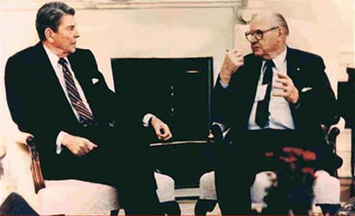

|
T he Russians have sustained the largest
weapons development program ever launched by any nation, and they
have kept it effectively hidden from prying Western eyes. I have
called this program “Fer-de-Lance,” after the deadly South
American pit viper of that name.
The dreaded fer-de-lance is a snake of great agility and lethal effect.
It often ambushes its hapless prey, striking unexpectedly and without
warning. Its first sudden strike is usually lethal to its victim, which
promptly expires in writhing agony. Since the Soviet development of scalar
EM weapons has been designed for the same purpose, the name seems
appropriate.

October 1984: Roy Brewer briefs
President Reagan about scalar EM weapons at Tom Bearden's request.
Then briefs National Security Council.
Three times Reagan ordered his Defense Secretary to take action, but none
of the three did so because the U.S. Intelligence Community didn't believe
it, and opposed any action.
(Full story in 2nd Edition, "Fer de Lance")
TABLE OF CONTENTS
2002 OVERVIEW AND BACKGROUND
Mad Scramble of Soviet Science After the End of WW II
One Institute Had 2,000 PhDs and a Full Support Staff
Situation in the Early 1950s
1963 Deployment and Immediate Use of Scalar Interferometers
An Example of Russian Technology Astonishing Western Scientists
Softening of Metal at a Distance Was One Effect Used Against the
Challenger
Energetics: Three Branches and a Strategic Deception Plan
Strategic Attacks Scheduled and Why We Were Not Destroyed
Attempts to Alert the Nation
The Responses
Effective Survival Treatment of Mass Casualties Could Be Developed
The Official Silence Was Deafening
The Long Dry Spell in Correcting Electrodynamics May Be Slowly Ending
Engineerable Unified Field Theory Is Now Clearly Appearing
Examples of Some Major Non Sequiturs in Conventional Electrodynamics
Wide Confusion of Cause and Effect
CSRs: Engineering the Unobserved Causal Side To Create Functional
Systems
Making the First CSR is Extremely Difficult; Making a Million Copies Is
Easy
In 1999 The KGB Deployed Massive Numbers of CSRs for a Strategic Attack
How the Asymmetrically Deployed Strategic Attack Was Stopped in Its
Tracks
The Mostly-Ignored Time-Energy Interaction
Development of Threats and Scheduled Attacks Aborted
Live Destructive Tests Over and Near the U.S. Have Continued
The Scientific Basis For Energetics Weapons Is Established
Our Situation Here In the U.S. Is Precarious
The Dominant Weapons Are Quantum Potential Weapons
Cellular Time Reversal: Revolutionary Healing by a Team of French
Scientists
Becker's Study of the Cellular Regeneration System
Need to Correct and Extend Classical Electrodynamics
The Situation Is Serious
A New Manhattan Project Is Warranted
2002 ENERGETICS WEAPONS THREAT TO THE U.S.
The U.S. Narrowly Escaped Energetics Destruction Twice in 1997
Initiation of the Brazilian Energetics Weapon Program
Related Phenomena
Stalin Personally Initiated the Soviet Energetics Program with
the Greatest Urgency
A Great Technical Breakthrough in Physics Can Always be Had in Four
Years
A Typical Example: The Suppression of Cold Fusion
Revolutionary New Processes Are Hidden in the Cold Fusion Experimental
Results
Stalin’s Dictatorial Impact on Soviet Scientific Management’s Response
Our Own Science Community's Progress During These Decades
U.S. Scientists Have Committed Monstrous Crimes and Gone Unpunished
Energetics: New Principles of Physics and How the Soviets Found Them
Longitudinal EM Wave Interferometry Energetics Was Almost Immediately
Uncovered
By 1950 Russian Energetics Was Off and Running
Deployment of the Soviet Energetics Weapons and Their Quick Use
Why the Soviets Could Continue to Attack and Kill U.S. Targets with
Impunity
The Science Behind the Soviet Energetics Weapons
The Importance of Scalar Photons and Time-Density Waves
Psychoenergetics: Engineering the Mind-Matter Interaction by
Engineering Mind
Quantum Potential Weapons Are Utilized in All Three Energetics Branches
The Importance of Longitudinal EM Waves
Energy, Wave Energy, and Wave Speed are All Dramatically Altered
A Process for Creating Longitudinal and Time-Density EM Waves
Quantum Potentials and Multiply Connected Spacetime
Need for Caution with QPs Used Against Biological Organisms
A Hypothetical Example
The QP Weapon Is a Superb Energy Amplifier "For Free"
Other Novel Uses of QP Weapons
The U.S. Narrowly Escaped Destruction Twice in 1997 Alone
Purpose of the Novel Attack on Captain Button
Rogue Japanese (Yakuza and Aum Shinrikyo) Have a Role
Inducing the Gulf War Disease
40-Years of Russian Induction of Diseases In U.S. Embassy Personnel
Western Electrodynamics Is in Sad Shape
Toward a Deeper Electrodynamics
Time Is Highly Compacted Energy
The New Transduction Model Explains the Cold Fusion Results and
Mechanisms
Why There Is a Time Delay in the Onset of Cold Fusion Phenomena
The Early Soviet Longitudinal Wave Interferometers
Khrushchev Killed the Thresher to Prevent His Own Dismissal
Khrushchev Demonstrated the Powerful Blast Capability of Strategic
Interferometry
Weather Engineering Over North America
Earthquakes to Order
Readying the Weapons for the 1985 Readiness Demonstration Tests
Meeting the 1985 Schedule for Readiness
KGB Crews Regularly Practiced Against U.S. Rocket Launches from Cape
Canaveral
Kill of the Arrow DC: Practice Turned into Performance
The Arrow Pilot Sensed the Lack of Power, But the Aircraft Was
Immediately Hit
Elements of the U.S. Government Deliberately Suppressed Vital Evidence
Other Direct Energetics Signatures on the Arrow DC-8
Other Acts of War Completed the Milestone
Kill of the Titan Missile Over Vandenberg Air Force Base
Dead-Man Fuzing and Outside Assistance Deterred a Full Strategic Attack
in 1986
What Really Happened in the Chernobyl Disaster
The High Side Risk Factor
The Low Side Risk Factor
Consequences of Not Taking Counterfire Action
My Recommendation to the Counterfire Group
The Group Fired and Took Out a Transmitter
Results at the Transmitter and at Chernobyl
Kill of the Challenger Included Use of Metal-Softening
Cold Molding: An Epilog to the Metal-Softening Donnybrook
Additional Update from Year 1998 to Year 2,000 Has Been Given
There is Also a Severe Bioenergetics (EM Biological Warfare) Threat
National Institute of Health Reaction
How the New Revolution in Medical Healing Works
What the French Researchers Showed
How the Regeneration Mechanism Was Finally Deciphered
Cellular and Body Rejuvenation are Possible, Once the Technology is
Developed
How Many Americans Could Be Saved?
There Are No Resistant Strains to the New Technology, and There Cannot
Be Any
Results of the Priore’ Treatments Are Well-Documented and Independently
Supported
The Present Threat Is Urgent, and Our Strategic Destruction is Still at
Issue
Desperately Needed Defensive Capabilities Can be Provided by a QP
Solution
In Conclusion
1986 FER DE LANCE INTRODUCTION & BRIEFING ON SOVIET SCALAR
ELECTROMAGNETIC WEAPONS
Scalar Electromagnetics is Electrogravitation
Fer-de-Lance
Energetics and Directed-Energy Weapons (DEWs)
The Soviets Use a Deception Plan
Destruction of the Challenger in January 1986
Technological Surprise and a New Hiroshima
We Have Given Up Defense in the Larger Sense
1986—THE BRIEFING
Slide 001: Characterization
Slide 002: Outline
Slide 003: Elements of the Emerging Theory
Slide 004: Three Kinds of Electromagnetics
Slide 005: Bohm-Aharonov Effect
Slide 006: A-Field is Real
Slide 007: Quantum Non-Locality
Slide 008: Vector Mathematics has a Fundamental Problem
Slide 009: The Zero-Vector Axiom
Slide 010: Are These Systems Equal?
Slide 011: Infolded Systems are Excluded by Physics
Slide 012: Kaluza Geometry
Slide 013: A Potential is a Change in the Stress of Vacuum
Slide 014: Type of Potential Depends on the Particle(s)
Slide 015: A Potential Extends to Infinity & Involves the Entire
Universe
Slide 016: A Natural Potential
Slide 017: An Artificial Potential
Slide 018: Producing an Artificial Potential
Slide 019: If No Observable Mass Flows:
Slide 020: Gravitational Potential: A Conglomerate of Stress Types
Slide 021: What Gravitational Field Is
Slide 022: EM Force Fields are Releases of Gravitational Potential via
Observable Mass Flows
Slide 023: Scalar O-Wave Production
Slide 024: Scalar Electromagnetics
Slide 025: Rogers’ Undersea & Underground Communications Systems
Slide 026: How does the Rogers System Work?
Slide 027: Scalar EM Waves are Emitted & Absorbed by the Nucleus
Slide 028: Nuclei of the Universe Continually Exchange Scalar EM Waves
Slide 029: Converting EM Field Energy to G-Field Energy & Vice-Versa
Slide 030: Normal EM Bleeds-Off G-Field
Slide 031: Scalar EM Forces 4-D G-Field
Slide 032: Detection of Electro-Gravitation
Slide 033: Scalar Wave Detector
Slide 034: Scalar Resonance
Slide 035: Scalar Resonance
Slide 036: Scalar Resonance Currents
Slide 037: Transverse Wave Interference
Slide 038: Transverse Wave Interference
Slide 039: Creating Energy at a Distance
Slide 040: Exothermic Mode (Scalar Interferometer)
Slide 041: Endothermic Mode (Scalar Interferometer)
Slide 042: Tesla’s "Big Eye" for Remote Viewing
Slide 043: Site of Mystery Cloud
Slide 044: Mushroom Cloud from Sea off Japan near Russian Test Area
Slide 045: Mushroom Cloud Rising from Sea
Slide 046: Mushroom Cloud from Sea off Japan
Slide 047: Not a Known Natural Phenomenon
Slide 048: Explosive Events seen on Soviet Island
Slide 049: Explosive Events seen on Soviet Island
Slide 050: Explosive Events seen on Soviet Islands
Slide 051: Creating a Spatial Ø-Field Pattern
Slide 052: Tesla Shield
Slide 053: Expanding Dome-like Phenomenon
Slide 054: Hemisphere & Globes 1977
Slide 055: Saryshagan Direction, September 1979
Slide 056: Continuous Tesla EMP Globe
Slide 057: Mysterious Light over North Pacific
Slide 058: White Sphere seen in North Atlantic 1976
Slide 059: Continuous Tesla Fireball
Slide 060: Terminal ABM System
Slide 062: ABM Defenses
Slide 063: Network of Virtual Transmitters
Slide 064: Network of Virtual Transmitters
Slide 065: Launch Phase ABM System
Slide 066: Soviet Command & Control Concept
Slide 067: Launch Phase ABM System (Anti-SLBM)
Slide 068: Detecting & Marking Missile Launch
Slide 069: Destroying the Launched Missiles
Slide 070: Shift to Anti-Sub Mode
Slide 071: Shifting to Earthquake Mode
Slide 072: Suppression Attack—MARVs (without defenses)
Slide 073: Suppression Attack—MARVs (with defenses)
Slide 074: Response to Counterforce Strike with No Defense
Slide 075: Response to Counterforce Strike with Defense
Slide 076: Clear Communications
Slide 077: Unique Communications
Slide 078: Mine Countermeasures—Orthodox System
Slide 079: Mine Countermeasures—Scalar EM Systems
Slide 080: Scalar Anti-Personnel Weapon
Slide 081: Afghanistan
Slide 082: Scalar Anti-Tank Weapon
Slide 083: Scalar Anti-Aircraft Weapon
Slide 084: Scalar Anti-Aircraft Weapon
Slide 085: An Effective Penetration Aid
Slide 086: Unique Capabilities: ATM/AD/AARTY
Slide 087: Unique Capabilities
Slide 088: Unique Capabilities
Slide 089: Unique Capabilities
Slide 090: Unique Capabilities: Penetrate Shielding
Slide 091: Multi-Purpose Weaponry
Slide 092: Multi-Purpose Weaponry
Slide 093: Multi-Purpose Weaponry
Slide 094: Unique Capabilities: Heat Extraction
Slide 095: Unique Capabilities: Cold Explosions
Slide 096: The Transmitter is the Major Weapon
Slide 097: Star Wars—The Final Frontier?
Slide 098: Comparison of EM Concepts (Chart)
Slide 099: Comparison of EM Concepts (Chart)
Slide 100: Comparison of EM Concepts (Chart)
Slide 101: Summary (1)
Slide 102: Summary (1)
Slide 103: Summary (2)
Slide 104: Summary (3)
Slide 105: Summary (4)
Slide 106: Soviet Defense Against Missiles
Slide 107: Surprise by Using Secret Weapons
Slide 108: Something Russia Doesn’t Want the U.S. to Know
1986 SLIDE REFERENCES
1986 ADDITIONAL SLIDE NOTES
1986 APPENDIX I
SOME IMPORTANT INDICATORS AND DESTRUCTIVE TESTING
INDICATORS AND SUCH
FINAL DRESS REHEARSAL BEFORE THE BIG SHOW
THE SHOW BEGINS
MORE FRIGHTENING THAN THE MIND OF MAN HAS EVER IMAGINED
SCALAR EM INOCULATION AND ITS IMPLICATIONS
1986 APPENDIX II
COMPUTER WORMS AND VIRUSES, AND THE IMPACT OF SCALAR EM
LARCENISTS
ARSONISTS
TERRORISM
ANTIBODIES
NATIONAL DEFENSE
THE WEST'S VULNERABILITY
CORE WARS REVISITED
A COMMERCIAL WORM
ADAM OSBORNE'S WARNING
"NOW YOU'VE DONE IT!"
TEEN CHALLENGE
"PEOPLE ARE BASICALLY GOOD"
FEDERAL FUNDS
SCALAR EM INOCULATION AND ITS IMPLICATIONS
1986 APPENDIX III
CONTINUING THE SCENARIO
2002 TABLE OF FIGURES
Figure 1 Stalin’s dictum removed any resistance from his scientific
community.
Figure 2 Typical shield test, northern route to Japan, seen by
passing airliner.
Figure 3 Giant missile shield test seen by passing ship's crew.
Figure 4 Nick Downie's sighting from the ground of distant Soviet
missile shield tests.
Figure 5 Scalar (longitudinal EM wave) interferometer.
Figure 6 Kill of the U.S.S. Thresher. With her controls jammed, the
hull of the doomed submarine implodes when she reaches crush depth
Figure 7 Proof of metal-softening signal: Golden softens nails with
amplified Woodpecker signal.
Figure 8 Three branches of Russian energetics weapons.
Figure 9 Quantum potential instantly attacking widely separated
targets.
Figure 10 Causal system robots (CSRs). These are sets of ST curvature
engines, with functions organized into a single complex weapon system
with communication, propagation, weapons effects, and command and
control functions incorporated. When the CSR interacts with mass, the
mass performs those system functions.
Figure 11 Microwave radiation of U.S. Embassy in Moscow.
Figure 12 Priore' laboratory and device for treating small animals.
Figure 13 Portable unit for rapid treatment of mass casualties.
Figure 14 The mass destruction weapons threat to our populace.
Figure 15 Soviet EM missile strike offset from U.S. shuttle launch at
Cape Canaveral on 26 Nov. 1985. This is the smoking gun.
Figure 16 Marker beacon above U.S. shuttle launch at Cape Canaveral,
26 Nov. 1985. Russian crews were using shuttle launches as practice ICBM
launch targets.
Figure 17 Kill of the Arrow DC-8 at Gander, Newfoundland Dec. 12,
1985.
Figure 18 The principle of general relativity extended to include the
concept of the vacuum engine.
Figure 19 Mass reproduction of a CSR is simple and inexpensive. The
CSR resides in, or propagates inside, any EM signal, potential, or
field.
Figure 20 Present author struck by CSR in latter 1999 as a deliberate
nonfatal stimulus.
Figure 21 Example of a time-reversed zone nuclear reaction common in
successful cold fusion experiments.
Figure 22 Captain Button's bizarre flight to his death on 2 April
1997.
Figure 23 Captain Button's flyaway path to his eventual fatal crash.
Figure 24 Climbing out of low-level ordnance delivery, Captain
Svoboda suddenly dives headlong to her death on 27 May 1997.
Figure 25 U.S. air strike on Libya, April 1986.
Figure 26 Simplified diagram of the immune system.
Figure 27 Becker's theoretical control system involved with response
to injury.
Figure 28 Becker's proposed control system governing regeneration.
Figure 29 Author's deeper block diagram of the cellular regeneration
system.
Figure 30 Kaznacheyev's electromagnetic induction of cellular disease
and disorder.
Figure 31 Becker's epochal bone fracture healing.
Figure 32 Infolded longitudinal EM biwaves composition of a scalar
potential, per Whittaker 1903.
Figure 33 Planned KGB/Yakuza/Aum Shinrikyo attack in 1997 was
foreshadowed in public statements made by Shoko Asahara.
Figure 34 Kill of TWA Flight 800 on 17 July 1996 by Yakuza and Aum
Shinrikyo.
Figure 35 Exothermic (cold) explosion off the Kurils 9 April 1984. A
second test, an expanding globe of light, was added in the exothermic
mode to demonstrate rapid serial switching between weapon modes.
Figure 36 Energy extracted from the vacuum by the asymmetry of the
source dipole powers every electric power line and electric circuit.
Figure 37 Electronuclear reaction in a time-reversed zone producing
excess deuterium ions.
Figure 38 Electronuclear reaction in a time-reversed zone producing
excess alpha particles.
Figure 39 This polluted and suffering planet. Direct result of the
scientific community's adamant resistance to upgrading classical
electrodynamics and electrical engineering.
Figure 40 Scalar interferometry in the endothermic (cooling) mode.
Figure 41 Scalar interferometry in the exothermic (heating) mode.
Figure 42 Deep underwater nuclear burst, demonstrating same water
phenomenology produced by Khrushchev's second demonstration on 11 Apr.
1963, the day after killing the U.S.S. Thresher.
Figure 43 America's national style: we do not react to slowly
increasing threats.
Figure 44 The only energy resource problem is the theoretical ostrich
problem in science. We must become theoretical owls, rather than
ostriches.
Figure 45 Mind levels are subject to engineering by higher group
symmetry electromagnetic (psychoenergetic) weapons. electromagnetic
(psychoenergetic) weapons.
Figure 46 A living biological system (psychoenergetics view).
Figure 47 Velocity is rotation. Necessary to understand the mind-body
coupling mechanism.
Figure 48 Mind-body coupling mechanism at work.
Figure 49 Prioré's large plasma tube installation in his
3-stories-high treatment facility for humans. Results obtained in animal
experiments were also duplicated in human experiments.
Figure 50 Typical Miller-Fox-Urey biogenesis experimental apparatus.
Figure 51 The shadow disease state is that structured virtual state
level of the promoting disease engine template, at which the immune
system reacts.
Figure 52 Simultaneous dudding of nuclear weapons worldwide. Also
duds nuclear reactors and nuclear propulsion systems.
Figure 53 Spreading (thinning) the immune system's ability available
to meet a new pathogen.
Figure 54 Counting rifles with earthquakes: Put up or shut up.
Figure 55 Brewer briefs President Reagan on Soviet scalar EM weapons
October, 1984, then briefs National Security Council
Figure 56 Extinguishing combustion in the engines of a jetliner 19
Feb. 1985.
Figure 57 Chernobyl disaster 25-26 April 1986.
Figure 58 "Bottling up" shield practice over Atlanta 12 Nov. 1986.
With a real shield, aircraft or missiles flying into it (from inside or
from outside) explode and are destroyed.
Figure 59 The superpower paradox: Asymmetric cheap WMD strategic
strikes and destruction, later becoming extremely high tech and extreme
yield.
Figure 60 Block diagram of Priore's healing (regenerative and
time-reversing) process.
Figure 61 Pautrizel's proof of time reversal of the stricken cells
back to a previous state.
2002 ENDNOTES |